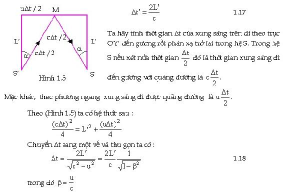
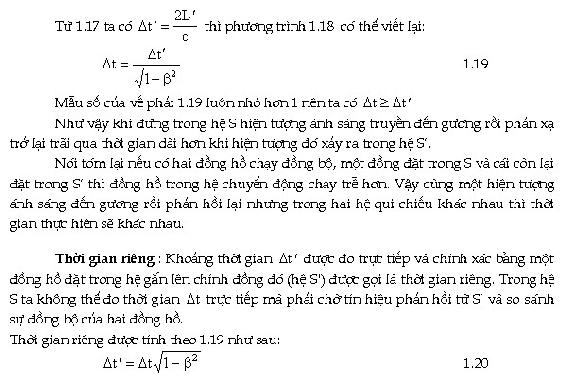
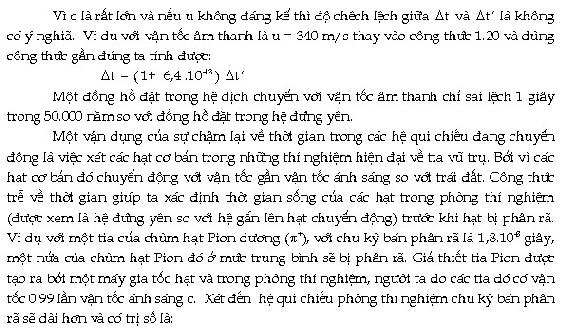
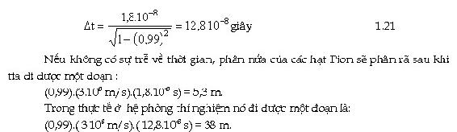

Theo cơ học Newton thì tất cả các đồng hồ có thể được cho đồng bộ như nhau bất kể sự chuyển động tương đối của các hệ. Ðiều nầy được chứng minh từ phép biến đổi Galileo.
Ðồng bộ là gì: Ví dụ có hai đồng hồ chạy hoàn toàn đúng như nhau. Ta đặt một cái tại trái đất, cái còn lại đặt trên tàu vũ trụ quay quanh mặt trăng. Vào cùng một thời điểm nào đó cả hai được điều chỉnh cùng một gía trị như nhau, sau đó nhiều tháng, nếu hai đồng hồ cùng chỉ một giá trị như nhau vào cùng một thời điểm quan sát ta nói hai đồng hồ đó là đồng bộ.
Theo giả thuyết Einstein người ta có thể kết luận được rằng: các đồng hồ đồng bộ trong cùng một hệ qui chiếu quán tính thì sẽ không đồng bộ khi đặt nó trong hai hệ qui chiếu quán tính khác nhau ( Một hệ qui chiếu đang đứng yên còn một hệ qui chiếu đang chuyển động tương đối so với hệ đứng yên)
Ta quay lại thí nghiệm hai hệ qui chiếu quán tính S và S trong đó S đi ra xa S theo chiều dương OX với vận tốc u. Trong hệ qui chiếu S ta có đặt một nguồn sáng mà bóng đèn sẽ phát sáng vào thời điểm ban đầu t =0 cũng là lúc S trùng với S. Ta đặt trên trục OY một gương phẳng M cách S một đoạn là L (ta sẽ nói sau là trong hệ qui chiếu S thì khoảng cách nầy là L).
Với người quan sát đứng trong S, khi một xung sáng phát ra theo trục OY đến gương rồi bị phản xạ trở lại mất một khoảng thời gian:




Sự trể về thời gian trong thí nghiệm của hạt sơ cấp thì rất dể quan sát bởi vì hạt chuyển động với vận tốc lớn gần vận tốc ánh sáng, đồng thời nó có thời gian sống ngắn. Tuy nhiên trong thế giới vĩ mô sự trễ về thời gian là rất khó đo lường. Một sự đo đạc chính xác đã được thực hiện tại trạm quan sát Nava của Mỹ để chứng tỏ sự đúng đắn của lý thuyết tương đối hẹp.
Sự chậm lại về thời gian của một đồng hồ trong các hệ qui chiếu quán tính đang chuyển động với vận tốc gần vận tốc ánh sáng so với các đồng hồ trong các hệ qui chiếu quán tính đứng yên là một minh chứng về sự không đồng bộ của thời gian của các hệ qui chiếu quán tính đứng yên và chuyển động. Sự không đồng bộ về thời gian chỉ ra rằng trong phép biến đổi Galileo không thể chấp nhận sự đồng nhất về thời gian trong hai hệ qui chiếu quán tính đang chuyển động với nhau (t =t). Chỉ khi vận tốc chuyển động tương đối là nhỏ thì ta mới có thể vận dụng phép biến đổi Galileo.